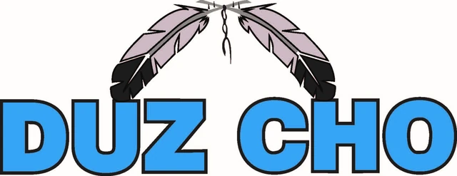
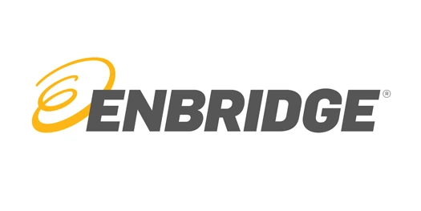
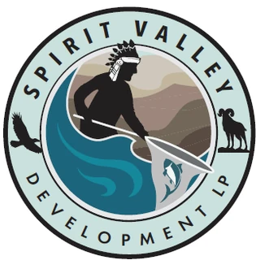
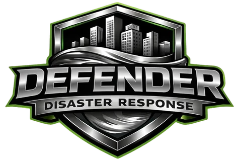
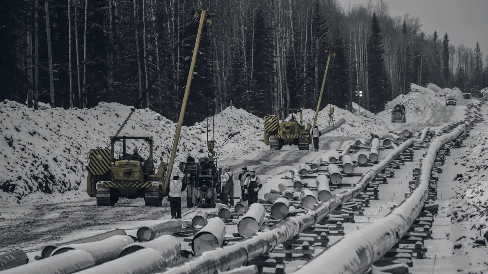
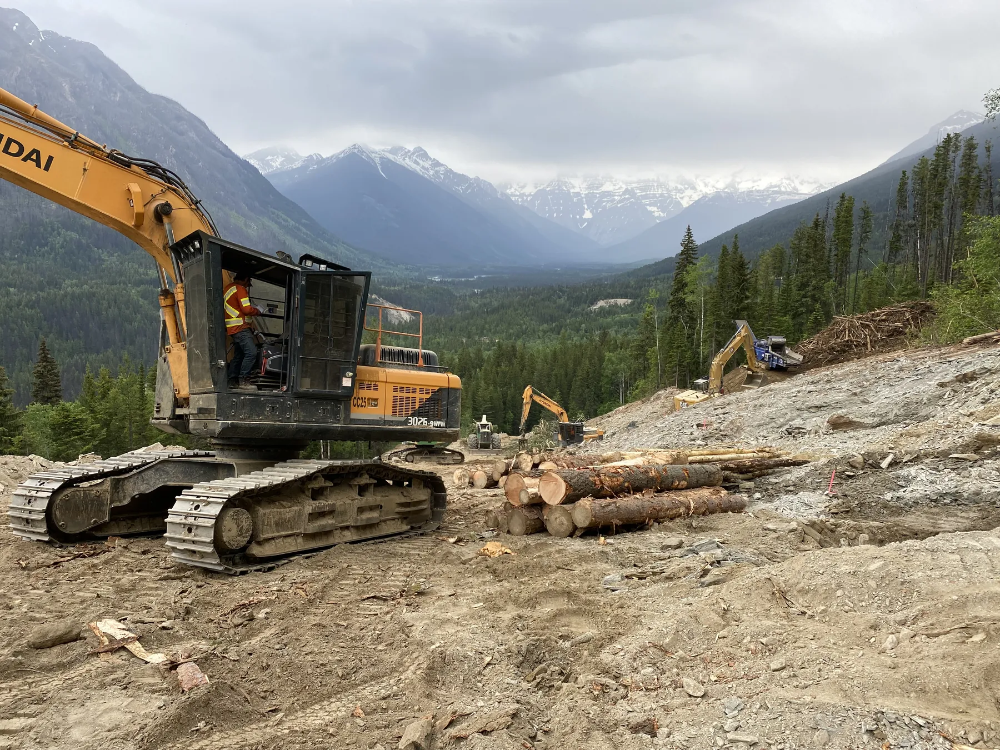

We put experienced people into major projects and ongoing infrastructure work, and support the estimating, contracts and delivery behind them. For project owners, contractors and First Nations businesses.
NEOS ADVISORSPROJECT DELIVERY & COMMERCIAL SUPPORT
WORKING WITH PARTNERS ACROSS CANADA





OUR SERVICES
Expertise for your next project.
Energy, pipelines, mining, forestry, industrial and infrastructure projects across Western Canada.
01 / STAFFING & ADVISORY
Project Staffing & Advisory Services
People and hands-on support for major projects and ongoing infrastructure work: staffing, estimating, contracts, controls and delivery.
Project Staffing
Provide project managers, estimators, coordinators and field leadership. Assess capacity gaps and define each assignment’s role, timing and responsibilities.
Contracts & Commercial Advice
Develop and review contracts, pricing schedules and rates. Identify commercial risks, manage changes and claims, and support negotiations.
Estimating & Proposals
Prepare estimates, prequalification material and tender submissions, with documented pricing assumptions and submission requirements.
Project Controls
Track costs, schedules, changes and progress through forecasts and reporting that support project decisions.
Project & Construction Management
Coordinate planning, procurement, change management, field supervision and close-out, with defined management responsibilities and reporting.
Partnerships, business opportunities and Indigenous participation, for Nations and the companies working in their territories.
Partnerships & Agreements
Identify partners and structure the arrangement: revenue share agreements, joint ventures and benefit agreements, with roles, responsibilities and commercial terms coordinated with the parties and their legal advisers.
Engagement & Coordination
Plan outreach, maintain relationships and track commitments. Coordinate Indigenous employment, training and supplier participation with project teams.
Opportunity Development
Assess project scopes against your capabilities and priorities. Maintain an opportunity pipeline with clear responsibilities and next steps.
Pursuit & Participation Support
Prepare partnership and Indigenous participation material for bids, including supporting documentation and agreed commitments.
Capacity & Readiness
Assess the business arm’s capacity and readiness, including prequalification and vendor lists, and plan the workforce, equipment and systems needed for larger work packages.
Select a work area to see what we prepared. Explore the full collection for more examples.
Browse 12 work areas
Estimating01
Production-Based Cost Estimates
A contractor needed a structured estimate for clearing and access work.
Work undertaken
Developed a bottom-up framework covering work fronts, labour and equipment inputs, mobilization, temporary access, project management and indirect costs.
Deliverables
Preliminary estimate workbook
Crew and production assumptions
Work-front schedule and bid-item mapping
Preliminary models prepared for estimating and execution review.
Rate Development02
Labour Rates and Pricing Models
A client needed a consistent basis for developing labour rates and preparing pricing schedules.
Work undertaken
Organized cost inputs, role classifications and commercial assumptions into rate schedules for review and submission.
Deliverables
Labour rate schedules
Cost and pricing assumptions
Rate comparison and submission support
Prepared to support pricing decisions and submission review.
Safety Management03
Health and Safety Manual Development
A construction business needed to update its safety management documentation.
Work undertaken
Reorganized the manual and clarified accountabilities, contractor management, hazard processes, document control and required records.
Deliverables
Revised health and safety manual
Revision summary and section mapping
Contractor safety response summary
Revised documentation issued for client review.
Procurement04
Requests for Quotation and Bid Packages
An owner needed to obtain comparable prices for a construction work package.
Work undertaken
Organized the work into clearly defined parts and prepared scope and pricing schedules with drawing references, interfaces and conditions for starting work.
Deliverables
Request-for-quotation package
Trade scope and pricing schedule
Drawing references and submission requirements
Draft procurement material prepared for owner review.
Tender Support05
Proposal and Prequalification Reviews
A contractor was preparing a proposal for a major infrastructure work package.
Work undertaken
Reviewed requirement coverage, supporting evidence and document completeness, then prioritized revisions for the submission team.
Deliverables
Proposal evaluation report
Requirement and evidence checks
Prioritized revision list
Prepared to support the client’s submission review.
Execution Planning06
Construction Execution Plans
A contractor needed to establish how a large work package could be resourced and delivered.
Work undertaken
Developed a preliminary execution plan covering work fronts, crew allocations, specialist requirements, access constraints and priorities before mobilization.
Deliverables
Preliminary execution plan
Crew and equipment requirements
Access constraints and priority actions
Preliminary planning prepared for internal review and further development.
Contract Development07
Construction Contract Packages
An owner needed a consistent agreement package for engaging construction trades directly.
Work undertaken
Developed a reusable construction trade contract and a project-specific version, aligning the main agreement with the scope, pricing, safety and coordination schedules.
Deliverables
Construction trade contract template
Scope, payment and insurance schedules
Project-specific agreement and review guide
Draft packages prepared for owner and legal review.
Commercial Advisory08
Contract Reviews and Proposed Revisions
A client needed to understand the issues in a draft service or construction agreement before proceeding.
Work undertaken
Checked the full agreement package, identified missing or inconsistent provisions and documented proposed changes and questions for the client and legal counsel.
Deliverables
Commercial review report
Completeness and consistency check
Proposed revisions and decision list
Prepared to support client decisions and legal review.
Indigenous Engagement09
Engagement Plans and Opportunity Mapping
A business needed a structured approach to engaging First Nations and their development corporations.
Work undertaken
Mapped project opportunities and relevant organizations, grouped areas of focus and set out engagement priorities respecting each Nation’s decision-making processes and timelines.
Deliverables
Regional engagement plan
Project and relationship mapping
Engagement priorities and next steps
Planning material prepared to guide engagement; no Nation endorsement or project award is implied.
Partnership Development10
Revenue Share Agreements and Joint Ventures
A Nation-owned business and a contractor wanted to work together on a project in the Nation’s territory and needed to choose how to structure the partnership.
Work undertaken
Set out a revenue share agreement, where the contractor delivers the work and pays the Nation’s business an agreed share of contract revenue, and compared it with a joint venture, where the two share ownership, risk and profit. Prepared the terms, commitments and reporting for the preferred option.
Deliverables
Revenue share terms and commitments
Joint venture structure for comparison
Side-by-side comparison of the options
Support for partnership development and review; final arrangements require the parties’ agreement.
Capacity Building11
Capacity Assessments and Growth Planning
A contractor needed to understand available capacity and what would be required to scale its operations.
Work undertaken
Prepared partner capacity forms and resource planning material covering service capabilities, equipment, crew availability, commitments and potential scale-up requirements.
Deliverables
Partner capacity assessment tools
Workforce and equipment planning
Capacity gaps and scale-up priorities
Planning and assessment tools prepared to support capacity development.
Mutual Benefit Agreements12
Mutual Benefit Agreement Development
Parties needed to translate proposed partnership benefits into a clear agreement framework.
Work undertaken
Helped develop and review proposed terms addressing participation opportunities, each party’s responsibilities, benefit arrangements and ongoing administration.
Deliverables
Proposed agreement framework
Participation and benefit provisions
Responsibilities and review comments
Draft terms are subject to the parties’ agreement and legal review.

TRANS MOUNTAIN EXPANSION PROJECT
MILESTONE PROJECT
Trans Mountain Expansion Project
Simpcw Resources Group
Commercial advisory, tender support and operational systems for participation in a major infrastructure project.
Neos Advisors is a Western Canadian project management, construction services and advisory firm based in Edmonton. Our people are professional engineers and project specialists with field experience on major projects and ongoing infrastructure work.
MANAGING PARTNER · CO-FOUNDER
Stavros Salmas P.Eng.
MANAGING PARTNER · CO-FOUNDER
Anthony Del Mastro P.Eng.
MANAGING PARTNER · CO-FOUNDER
Christos Salmas P.Eng.
Our project teams
We build each project team from a network of experienced professionals, from one specialist filling a gap to a complete management team.
Indigenous Engagement
Taylor McLeodIndigenous Engagement Manager
Heidi SidkyIndigenous Engagement Coordinator
Project Management
Project Advisors
Project Managers
Project Engineers
Estimators
Construction
Construction Managers
Superintendents
Subject Matter Experts
Project Controls
Project Controls Specialists
Schedulers
Document Control
Quality and Safety
Quality Control Managers and Coordinators
Quality Assurance and Traceability
Safety Managers and Coordinators
Coordination and Administration
Project Coordinators
Administrators and Office Managers
Head office
Lauren TerefenkoBrand & Design Lead / Senior Project Administrator
Maria ParavalosAccounting Lead
CAREERS
Join our growing team.
We work with experienced project managers, coordinators, controls specialists and Indigenous engagement professionals. Tell us about your experience.